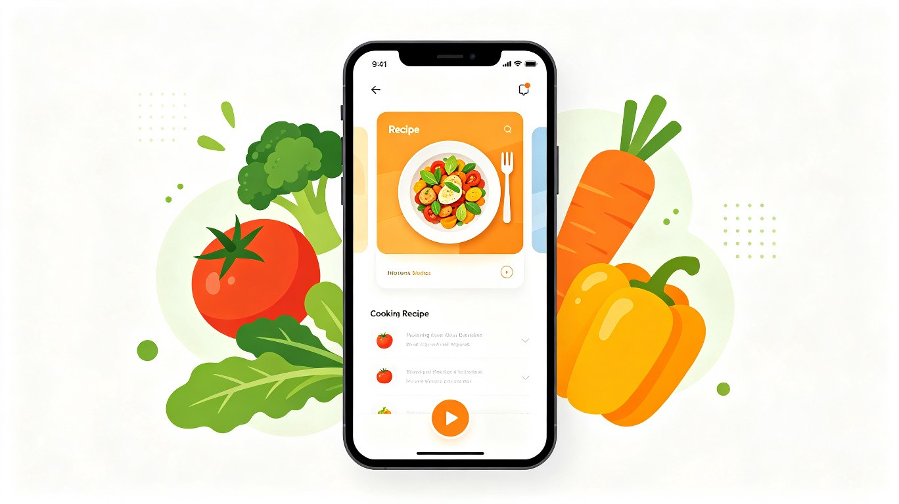
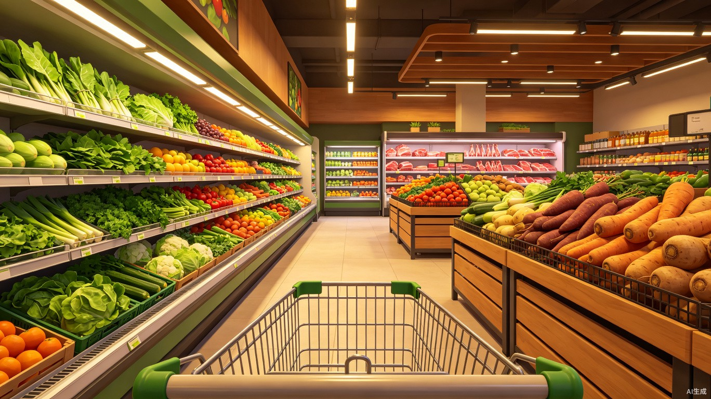
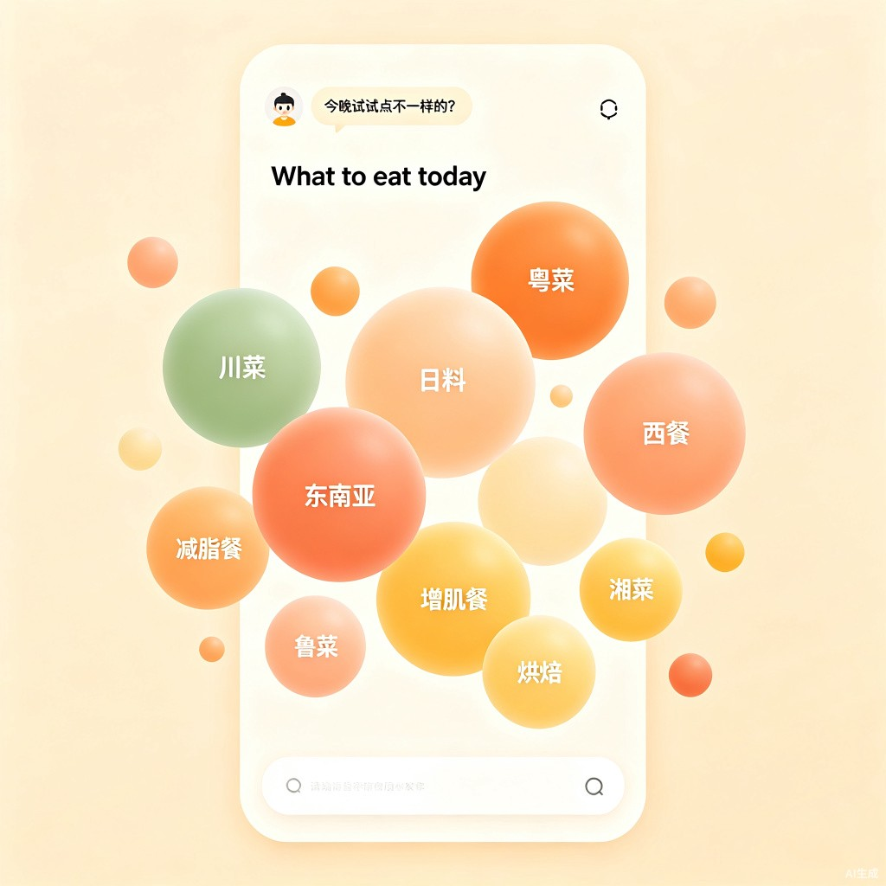
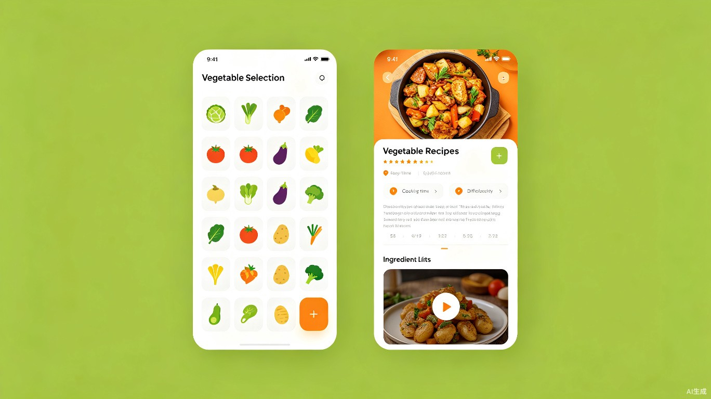

菜篮子 — 一站式 AI 下厨助手
不知道吃什么、不知道买什么、不知道怎么做——打开一个 App，三个问题全部解决。
产品概述
「菜篮子」不是又一个菜谱 App。
市面上现有的菜谱应用，都有一个共同的前提——用户已经知道自己要做什么菜，只是需要查一下步骤和用量。但现实中，大多数人在家做饭面临的不是"怎么做"的问题，而是更上游的三个连环问题：不知道吃什么 → 不知道买什么 → 不知道怎么做。
「菜篮子」是一款一站式 AI 下厨助手，采用小程序 + APP 双端形态，专门解决这条完整链路。三大核心功能模块一一对应这三个问题：
- 今天吃什么 + 个人食谱 Agent — 解决"不知道吃什么"。以生动气泡 UI 展示各菜系和饮食类型，内嵌专属智能 Agent，结合用户历史偏好和当天状态，主动推荐"今晚做什么"。
- 沉浸式逛超市 — 解决"不知道买什么"。第一人称 3D 场景模拟商超购物体验，用户推着购物车挑选食材。更重要的是，这个模块是未来与连锁生鲜超市合作的商业桥梁——模拟逛完后，购物车可以一键变为真实下单。
- AI 智能菜谱推荐 — 解决"不知道怎么做"。用户选定食材后，调用大模型 API 动态生成完整菜谱和教学视频链接，覆盖近乎无限的食材组合。
三大模块不是三个独立功能，而是同一条链路上的三个环节。一个人在家想做饭，打开这一个 App，从"吃什么"到"买什么"再到"怎么做"，不需要离开这个应用，不需要打开别的搜索工具，不需要在多个 App 之间跳来跳去。这就是「菜篮子」和所有现有产品的根本区别。

功能一：AI 智能菜谱推荐
这是产品的基座能力。用户在应用内选择自己手头的蔬菜（支持多选），系统调用大语言模型 API，根据这些食材实时生成可做的菜品推荐、完整菜谱和教学视频搜索链接。相比自建菜谱数据库的方案，AI 驱动的方式能覆盖近乎无限的食材组合，而且菜谱内容更灵活、更个性化。
交互流程
选蔬菜
在分类网格中点选自己拥有的蔬菜，支持搜索和快捷标签
AI 匹配
调用大模型 API，基于食材组合动态生成推荐菜谱
看菜谱
浏览 AI 生成的食材用量、步骤说明和烹饪小贴士
看视频
一键跳转网络烹饪教学视频，边看边做
功能细节拆解
蔬菜选择界面
- 分类浏览：按叶菜类、根茎类、瓜果类、菌菇类、豆制品、肉类等分类展示，每个分类下以卡片网格呈现，每张卡片包含蔬菜图标、名称和常见搭配提示。
- 智能搜索：支持拼音、中文、方言别名搜索（如输入"西红柿"或"番茄"都能匹配），搜索栏带历史记录和热门推荐。
- 快捷标签：顶部提供"时令蔬菜""冰箱常备""清淡""下饭"等标签，一键筛选。
- 已选浮窗：底部常驻一个可展开的已选食材条，随时查看和增删。
AI 菜谱生成机制
- 大模型调用：用户选定食材后，系统将食材列表连同预设的 Prompt 模板发送给国内大模型 API（优先选择响应快、成本低的模型，如 DeepSeek-V3、Kimi、通义千问等），由 AI 实时生成 3-5 道推荐菜品。
- 结构化输出：通过 Prompt 工程控制 AI 输出为标准结构化格式（菜名、食材清单及用量、分步骤说明、烹饪时间、难度评估），前端解析后以统一的卡片样式渲染。
- 多模型备选：支持配置多个 AI 模型作为备选，主模型超时或异常时自动切换，确保推荐稳定性。
- Prompt 优化：Prompt 中注入用户偏好（口味、忌口、历史高频菜系），使推荐更贴合个人习惯。
视频链接集成
- AI 在生成菜谱的同时，会输出该菜品适合的搜索关键词。系统用这些关键词调用视频平台搜索 API（或通过预设的搜索 URL 模板），生成 1-3 个教学视频链接。
- 视频以缩略图卡片形式展示，显示标题、时长、来源平台标识（B站、抖音、小红书等）。
- 点击后通过应用内 WebView 或跳转外部浏览器打开，用户无需自行搜索。
- 支持"画中画"模式，视频悬浮在菜谱上方，方便边看边做。
功能二：沉浸式逛超市体验
当用户不知道想吃什么、也不知道该选什么菜的时候，可以进入"逛超市"模式——一个以第一人称视角呈现的 3D 轻量场景，模拟真实商超或菜场的购物体验。用户推着购物车在通道中前进后退，左右两侧的货架上陈列着各种蔬菜和肉类，点击即可"拿取"放入购物车，选完后一键跳转到 AI 菜谱推荐。

场景设计
环境氛围
暖色调灯光、木质感货架、地面瓷砖反光，营造真实商超的温润质感。背景有轻微的商场环境白噪音。
货架陈列
左右两侧货架按品类分区：叶菜区、根茎区、瓜果区、菌菇区、肉类区、调料区。每个区域有清晰的分区标牌。
第一人称操控
屏幕下方虚拟摇杆控制前进后退和左右转向。也可支持手机陀螺仪，倾斜设备来环顾四周。
食材互动
靠近货架时，食材会高亮显示。点击即可"拿取"，伴随放入购物车的动画和音效反馈。
交互设计
- 移动控制：屏幕左下角虚拟摇杆控制前后移动，右下角控制左右转向。支持手势滑动和陀螺仪两种模式，可在设置中切换。
- 查看与拿取：当用户走近货架（距离阈值内），架上的蔬菜/肉类会浮起并显示名称标签。点击该物品，它会以抛物线飞入画面下方的购物车中，伴随清脆的"放入"音效。
- 购物车面板：画面底部半透明展示当前已选食材的图标和数量，点击可展开完整列表，支持移除。
- 区域切换：走到通道尽头会自动过渡到下一个品类区域，也可通过顶部的快速传送按钮直接跳转到指定区域。
- 结束逛超市：随时点击右上角"去推荐菜谱"按钮，将购物车中的所有食材传入 AI 推荐模块，由大模型实时生成匹配菜谱。
趣味化设计点
- 今日特价：随机在某些食材旁边挂上"今日特价"标签，点击后弹出该食材的趣味小知识或推荐搭配。
- 季节限定区：根据当前季节动态展示时令蔬菜，配以应季主题装饰（如春天有樱花元素、冬天有暖炉氛围）。
- 惊喜彩蛋：偶尔在角落发现"隐藏食材"，比如一把香葱或一块姜，收集后获得趣味成就徽章。
- 成就系统：累计逛超市次数、收集食材种类、尝试新菜谱等，解锁"超市达人""百菜全书"等成就称号。
功能三：今天吃什么 + 个人食谱 Agent
这是产品的"灵感发现"入口，面向那些连自己想吃什么菜系都不知道的用户。页面上以生动活泼的气泡形式展示各种菜系和饮食类型分类，用户可以随意浏览、点进感兴趣的分类查看推荐菜品。同时，页面内嵌一个独属于每个人的智能食谱 Agent，它基于用户的历史点菜记录和偏好记忆，结合当天状态、口味、社交场景等信息，提供个性化的"今晚吃什么"建议。

气泡分类发现页
气泡 UI 设计
- 气泡布局：页面上散布着大小不一、颜色各异的圆形气泡，每个气泡代表一个菜系或饮食类型。气泡不滚动、不晃动，但大小有层次、颜色有区分，整体画面显得生动而不杂乱。
- 分类体系：气泡涵盖的维度包括——
- 八大菜系：川菜、粤菜、鲁菜、苏菜、浙菜、闽菜、湘菜、徽菜
- 世界美食：日料、韩餐、东南亚菜、西餐、印度菜、墨西哥菜
- 饮食类型：减脂餐、增肌餐、低碳水、素食、轻食沙拉
- 场景类型：快手菜（15 分钟内）、一人食、年夜饭、周末大餐
- 点击进入：点击任意气泡进入该分类的推荐菜品列表，列表同样由 AI 根据分类动态生成，附带菜谱和视频链接。
- 个性化排列：根据用户历史点菜频率，高频菜系的气泡会自动变大、位置更居中，低频的靠边缘，形成"越常吃越显眼"的动态布局。
视觉效果
- 气泡使用柔和的莫兰迪色系（鼠尾草绿、暖杏色、浅珊瑚、米黄色等），不同分类维度用不同色系区分（菜系类偏暖色、世界美食偏冷色、饮食类型偏绿色系）。
- 气泡之间有细微的层次感（大气泡在下、小气泡在上），形成自然的景深效果。
- 页面顶部有一个 AI Agent 的头像标识和一句话推荐语（如"今晚试试点不一样的？""你最近吃了 3 次川菜，要不要换换口味？"）。
个人专属食谱 Agent
Agent 能力
- 历史记忆：Agent 记录用户的完整点菜历史——点过哪些菜、什么时间点、频率多高、是否收藏过、给过什么评分。这些数据构成用户的"口味画像"。
- 状态感知：Agent 能理解用户当下的状态和场景。用户可以告诉它"今天胃口不好""想请朋友来家里吃饭""今天加班很累想做快手菜""最近在减脂"，Agent 会结合这些信息调整推荐方向。
- 主动推荐：每次进入"今天吃什么"页面时，Agent 会根据当天的日期（工作日 vs 周末）、天气、用户近一周的饮食记录，主动给出 2-3 个个性化推荐，以对话气泡的形式呈现在页面顶部。
- 对话交互：页面底部有一个对话输入框，用户可以用自然语言和 Agent 交流。例如：
- "今天不想吃太油腻的"
- "冰箱里还有半个南瓜和一块豆腐，能做什么？"
- "周末想请 4 个朋友来吃饭，推荐一个菜单"
- "我最近总吃川菜，推荐点别的菜系"
技术实现
- Agent 基于 RAG（检索增强生成）架构实现。用户的历史点菜数据存储在用户画像库中，每次对话时作为 Context 注入 Prompt，让大模型"认识"这个用户。
- 对话采用流式输出（Streaming），用户能实时看到 Agent 的回复逐字生成，体验更流畅。
- Agent 推荐的菜品可以直接跳转到菜谱详情页，或者将食材列表传入"AI 智能菜谱推荐"模块生成更完整的菜谱。
一站式链路：三大功能的衔接设计
三个模块不是并列的独立功能，而是同一条链路上的三个环节，分别回答"吃什么""买什么""怎么做"这三个问题。用户可以从任意环节进入，也可以走完全程。
flowchart LR
subgraph 第一步[不知道吃什么？]
E[气泡发现页 + Agent]
end
subgraph 第二步[不知道买什么？]
C[蔬菜选择网格]
D[沉浸式逛超市]
end
subgraph 第三步[不知道怎么做？]
H[AI 菜谱生成]
I[菜谱详情 + 视频链接]
end
E -->|Agent 推荐/点气泡| G[选定菜品]
G -->|需要哪些食材| C
G --> D
C --> F[已选食材清单]
D --> F
F --> H
G --> I
H --> I
D -.->|合作超市对接| K[虚拟购物车 → 真实下单]
- 统一数据层：三个模块共享"已选食材"和"当前菜品"两个数据模型，任何一端的操作都会实时同步。
- 正向前进：用户从"今天吃什么"确定菜品 → 在逛超市或选菜网格中选定食材 → AI 生成菜谱和视频链接。这是一条从"想法"到"行动"的完整推进。
- 反向跳转：在菜谱详情页发现缺某种食材时，可以一键跳转到逛超市对应品类区域补选；在 Agent 对话中提到的食材，可以直接添加到选菜列表中。
- Agent 记忆联动：用户在任何模块中的行为都会被 Agent 记录——逛超市选了什么、看了什么菜谱、最终做了什么——持续丰富用户的口味画像，让下次推荐更精准。
- 模拟到真实的商业闭环：逛超市模块的购物车数据结构在设计上就与电商订单格式对齐。未来对接合作超市的 API 后，虚拟购物车可以一键转换为真实配送订单，实现"在 App 里逛完 → 菜谱也有了 → 食材也买好了"的终极体验。
产品形态：小程序 + APP 双端
产品采用微信/支付宝小程序 + 独立 APP的双端形态，覆盖不同的使用场景和用户群体。
小程序端（轻量入口）
承载"AI 菜谱推荐"和"今天吃什么 + Agent"两大功能。无需下载，扫码即用，适合日常快速查看菜谱和获取推荐。逛超市场景在小程序端以简化版（2D 翻页式货架）呈现。
APP 端（完整体验）
三大功能完整呈现，包括完整的 3D 逛超市场景、Agent 长对话记忆、离线菜谱缓存、成就系统等。适合深度用户和追求沉浸式体验的场景。
双端协同策略
- 账号互通：小程序和 APP 共享同一套用户账号体系，点菜历史、收藏、Agent 偏好画像等数据在两端实时同步。
- 功能梯度：小程序侧重"用完即走"的轻量场景（选菜→看菜谱→看视频），APP 侧重"沉浸体验"（逛超市 3D 场景、深度 Agent 交互、成就系统）。
- 引流路径：小程序端在"逛超市"入口显示"体验完整 3D 场景，下载 APP"的引导；APP 端支持将菜谱分享到微信，好友打开即为小程序页。
- 开发策略：核心业务逻辑（AI 推荐引擎、Agent 对话、用户画像）封装为统一的后端 API，小程序和 APP 共用。前端分别用小程序原生框架和 Flutter 开发。
信息架构
| 层级 | 页面/模块 | 核心内容 | 用户动作 | 端 |
|---|---|---|---|---|
| 首页 | 启动页 | 三大入口卡片、Agent 每日推荐语、历史记录 | 选择进入"选菜""逛超市"或"今天吃什么" | 双端 |
| 发现 | 气泡发现页 | 菜系/类型气泡、Agent 对话气泡、对话输入框 | 浏览分类、与 Agent 对话、点进分类 | 双端 |
| 选菜 | 蔬菜选择网格 | 分类蔬菜卡片、搜索栏、已选浮窗 | 点选/搜索/筛选蔬菜 | 双端 |
| 逛超市 | 3D 沉浸场景 | 虚拟货架、购物车、区域标牌、彩蛋 | 移动、查看、拿取食材 | APP |
| 逛超市简化 | 2D 货架翻页 | 分类货架页面、点击选食材 | 翻页浏览、点击选择 | 小程序 |
| 推荐 | 菜谱列表 | AI 生成的菜品卡片、排序筛选 | 浏览、选择菜品 | 双端 |
| 详情 | 菜谱详情页 | AI 菜谱、食材清单、步骤、视频链接 | 阅读菜谱、播放视频 | 双端 |
| 个人 | 个人中心 | 收藏菜谱、Agent 偏好、逛超市成就、设置 | 管理收藏、查看成就、调偏好 | 双端 |
技术方案概览
AI 推荐引擎
菜谱生成和 Agent 对话的核心都是大语言模型调用。系统采用"多模型路由 + Prompt 模板 + 结构化输出"的架构：
- 菜谱生成：用户选定食材后，将食材列表 + 用户偏好画像注入预定义的菜谱生成 Prompt，调用大模型 API 获取结构化 JSON 格式的菜谱结果。
- Agent 对话：基于 RAG 架构，每次对话携带用户的完整点菜历史摘要（最近 50 条）作为 Context，让大模型理解"你是谁、你喜欢吃什么"。
- 多模型路由：配置多个国内大模型 API（DeepSeek、Kimi、通义千问、文心一言等），按响应速度和成本动态路由。菜谱生成优先用快速模型，Agent 对话优先用理解能力强的模型。
- 视频链接获取：AI 输出的菜品名作为搜索关键词，通过视频平台公开搜索 URL 模板（如 B站搜索、抖音搜索）生成链接，无需申请平台 API Key。
3D 超市场景
超市模块采用轻量级 3D 引擎构建，优先考虑移动端性能和包体大小。场景模型采用低多边形（Low-Poly）风格，既降低渲染开销，又自带一种清新、亲和的视觉气质。所有模型和贴图资源通过异步加载按需获取，首屏加载时间控制在 3 秒以内。小程序端的简化版使用 2D 翻页式货架交互，无需 3D 引擎。
技术栈建议
技术选型对比
| 维度 | 方案 A：Flutter + Unity | 方案 B：小程序 + Taro + React | 方案 C：原生 + Unity |
|---|---|---|---|
| 双端覆盖 | APP 优秀，小程序需另开发 | 小程序和 H5 优秀，APP 体验一般 | APP 优秀，小程序需另开发 |
| 3D 性能 | 优，Unity 原生渲染 | 差，需 WebView 降级 | 优，原生调用 GPU |
| AI 集成 | 直接调用 API，流式输出支持好 | 支持好，WebSocket 集成简单 | 直接调用 API |
| 开发效率 | 高，Flutter 跨平台 | 最高，一套代码多端 | 低，双端分别开发 |
| 推荐场景 | APP 体验优先，小程序做轻量版 | 小程序优先，快速验证 | 追求极致体验 |
界面设计方向

视觉风格
整体视觉以"自然、温暖、有食欲感"为基调。主色调采用深橄榄绿（#2D6A4F）搭配暖橙色（#E76F51）和深海蓝（#264653），背景使用暖白色（#FEFCF8），给人干净而温馨的感觉。蔬菜图标采用扁平化的手绘风格，气泡界面使用柔和的莫兰迪色系增加层次感。字体选用圆角无衬线体作为标题字体，衬线体作为正文，兼顾现代感和阅读舒适度。
关键界面说明
- 启动页：简洁的品牌 Logo + Agent 个性化问候语（如"今天辛苦了，来碗热汤？"），下方三个入口卡片："选菜推荐""逛逛超市""今天吃什么"。
- 今天吃什么（气泡发现页）：页面主体是散布的彩色分类气泡，顶部是 Agent 头像和推荐语，底部是对话输入框。整体感觉像一个"美食灵感宇宙"。
- 蔬菜选择页：顶部搜索栏 + 横向滑动的分类标签 + 主体区域的蔬菜网格卡片。底部固定的已选食材条。
- 逛超市场景（APP）：全屏 3D 渲染，叠加半透明的 UI 层（左下角摇杆、右下角转向控制、底部购物车条、右上角"去推荐"按钮）。
- 逛超市简化版（小程序）：2D 货架翻页式交互，左右滑动切换品类，点击食材直接添加到购物车。
- 菜谱推荐列表：卡片式布局，每张卡片包含 AI 生成的菜名、所需时间、难度、食材匹配情况。带有"AI 生成"标识。
- 菜谱详情页：顶部大图 + 菜名，下方标签页切换"食材清单""步骤说明""教学视频"。Agent 对话入口悬浮在右下角。
商业化：逛超市是核心商业资产
「菜篮子」的商业价值核心不在菜谱，不在 Agent，而在逛超市这个模块。它不是一个锦上添花的趣味功能，而是一个可以承载真实交易的商业基础设施。
核心商业模式：虚拟逛超市 → 真实生鲜下单
逛超市的 3D 场景本质上是一套虚拟货架系统。每个货架上的商品可以映射为合作生鲜超市的真实 SKU，价格、库存、促销信息通过 API 实时同步。用户在「菜篮子」里模拟逛完超市、把想要的食材放进购物车后，点击"去推荐菜谱"可以获取菜谱，点击"一键下单"则直接跳转到合作方的结算页面完成真实购买。整个过程，用户感受到的是"我在一个有趣的 App 里逛了超市、选了菜、拿到了菜谱、食材也买好了"。
合作对象与对接方式
连锁生鲜超市
盒马、叮咚买菜、永辉、朴朴、美团买菜等。对接其商品目录 API，虚拟货架展示真实商品和实时价格。用户下单后由合作方配送履约。
本地社区菜场
与线下菜场/农贸市场合作，将其档口数字化搬入 3D 场景。用户在 App 里"逛"的是真实的本地菜场，支持到店自提或同城配送。
内容创作者导流
为美食博主提供精准流量入口。用户看完菜谱后点击教学视频，为创作者带来增量观看。按导流效果付费或分佣。
AI Agent 高级订阅
免费用户每日有限次 AI 对话和菜谱生成。高级会员享无限对话、营养分析、周菜单自动规划等功能。
商业壁垒
- 虚拟货架体系：3D 超市场景不是一次性开发的 UI，而是一套可复用的、可接入任意合作方商品数据的虚拟零售基础设施。一旦与头部生鲜平台完成首次对接，后续接入新的合作方只需数据映射，边际成本极低。
- 场景即流量：用户是在"逛超市"的沉浸体验中自然完成选品，这不是传统的搜索式电商，而是场景式发现。这种模式下的转化率远高于列表式商品浏览，对合作方有很强的吸引力。
- 数据闭环：用户从"想吃什么"到"买了什么"再到"做了什么"的全链路数据都沉淀在「菜篮子」内。这套数据可以反哺合作方的选品和促销策略，形成双向价值。
未来扩展方向
- 生鲜超市多商家接入：支持用户在同一 3D 场景中切换不同合作超市，比较价格和配送时效，选择最优方案下单。虚拟货架成为一个多商家聚合的生鲜入口。
- 营养均衡分析：根据用户一周的菜谱记录，Agent 自动分析营养摄入情况并给出改善建议。
- 社交分享：用户可以分享自己的 Agent 推荐记录、"一周菜单"或"超市购物清单"到社交平台。
- AR 实景识别：手机摄像头对准冰箱里的蔬菜，自动识别食材并调用 AI 推荐菜谱（APP 端独有）。
- 多人协作菜谱：家庭成员共享一个"家庭菜篮子"，Agent 综合全家人的口味偏好推荐菜品。
- 语音交互：对着手机说"今天想吃点辣的"，Agent 直接语音回复推荐，解放双手做菜时使用。
开发阶段规划
整体开发分为五个阶段，从核心功能验证到创意功能落地，逐步迭代。
-
Phase 1 — MVP 验证（4-6 周）
搭建核心选菜推荐功能，接入 AI 大模型 API 实现菜谱生成，完成视频链接跳转。以最简单的列表形式完成"选菜 → AI 生成菜谱 → 看视频"的完整闭环。先做小程序端验证用户需求。 -
Phase 2 — "今天吃什么" + Agent（3-4 周）
开发气泡发现页界面，接入 Agent 对话功能，实现用户历史记忆和个性化推荐。完善用户画像系统（点菜记录、偏好标签）。 -
Phase 3 — 体验打磨（2-3 周）
优化 UI 视觉设计，完善搜索、分类、排序等交互细节。加入收藏、历史记录等基础个人功能。扩充 Prompt 模板提升 AI 输出质量。 -
Phase 4 — 逛超市模块（6-8 周）
APP 端开发 3D 超市场景（Unity/Godot），小程序端开发 2D 简化版。实现第一人称移动、货架交互、购物车系统，与 AI 推荐模块打通数据链路。加入音效、成就系统等趣味化元素。 -
Phase 5 — 增长与商业化（持续）
上线运营，收集用户反馈迭代优化。探索食材电商导流、AI Agent 高级订阅、内容合作等商业化路径。根据数据决定是否投入 AR 识别、语音交互等高级功能。